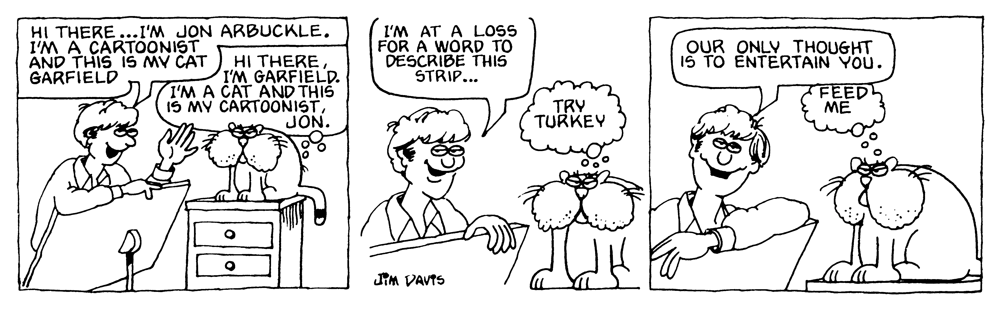
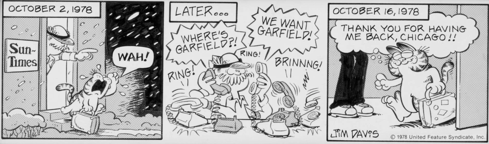
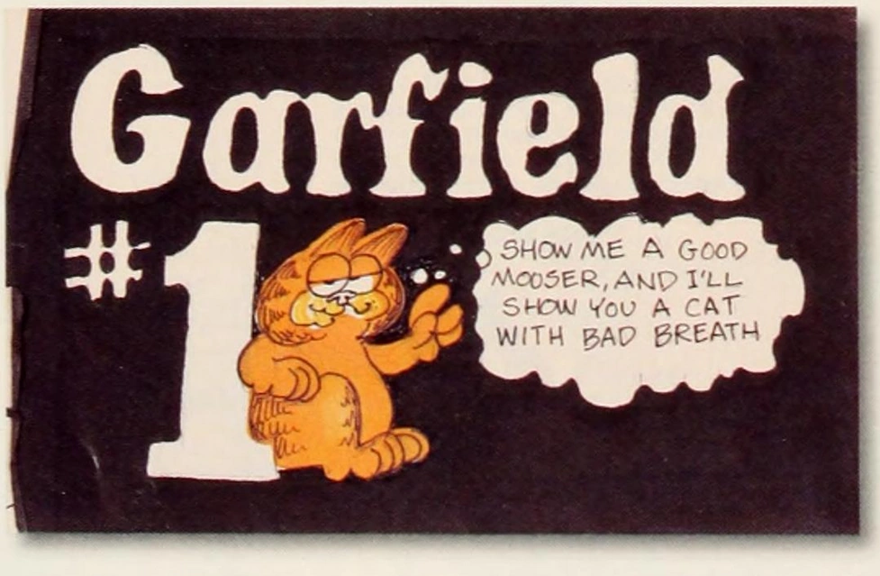
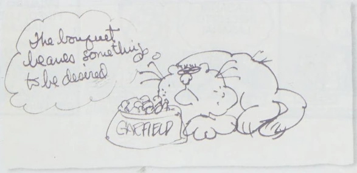

Welcome to our artifacts exhibit!
The following images and pictures below are rare and valuable artifacts
that have been discovered by our experts in Garfieldology
The first prototype comic of Garfield (previously called
Jon):

Rare comic of Garfield returning to Chicago that was exclusive to the Chicago Sun Times

Early mockup cover of the first Garfield book

Early sketch of Garfield drawn by Jim Davis:

Garfield's First lasgana (In black & white and in colour)

Rare factory sealed and mint condition copy of Garfield: caught in the act